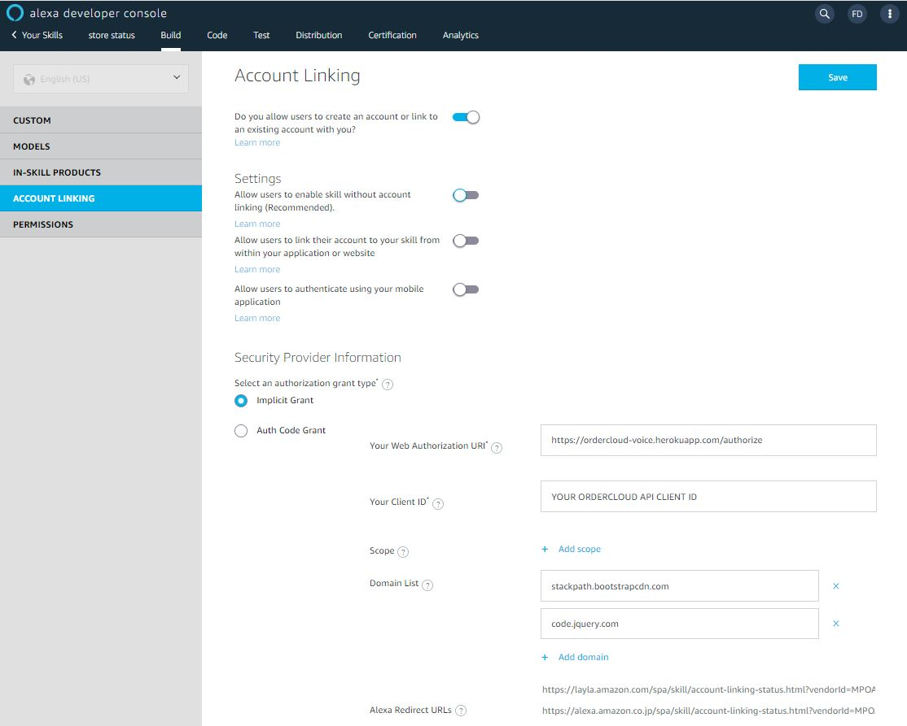

Step 1: Create Skill
Once you login to the Alexa Developer Console, select "Create skill"
Name your skill in the "Skill Name" box, while leaving the default language as your localeChoose Alexa-Hosted (Node.js) for backend resources
Once those are selected, click "Create Skill" at the top of the page.

Step 2: Create Intent
Once the skill is created, under "Build" you'll see autogenerated
intents. This will be what phrases Alexa will redirect to your skill.

The more phrases you add, the more likely Alexa is to route your
requests correctly. Since natural language varies, try adding as many
variations as possible. If you need to collect information from the
user before triggering your skill, you can add slots to your intent.
As you see below, we are collecting a timeframe slot from the user

Step 3: Add Intent Slots (if neccessary)
To collect information from the user during the skill trigger, add a Slot right below your intents. From there you can create a slot and tell your intent what the type is (Date, number, string, etc)
Step 3. Link Account
Once your have your skill created with the correct intents, you can use our default hosted web authorization to set up account linking. Set up your account linking as follows, using your own OrderCloud API Client ID:
Alternatively, you read our documentation here to host your own web authorization and custom alexa skill.